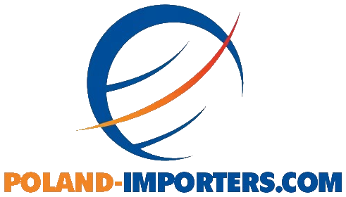

ProposalTrade mission & buyer mobilisation
Buyer Mobilisation Proposal – Poland
7th Bharat Footwear & Leather Expo (BFLEX), 15–16 March 2027, New Delhi
1Subject
Mobilising buyers from Poland to visit BFLEX 2027. Every buyer profile is reviewed and approved by CLE before participation is finalised. The final selection is completed by 30 November 2026.
2Product groups
- Footwear: leather footwear for men, women and children
- Leather accessories: bags, wallets, belts and small leather goods
- Leather apparel: leather jackets, coats and garments
3Type of buyers
Footwear
- Footwear retail chains and fashion retail chains
- Local brands
- Wholesalers and distributors
- Producers
Leather accessories
- Leather goods retail chains
- Fashion retail chains and general retailers
- Brands with e-commerce and boutique retail chains
- Wholesalers and distributors
- Suppliers of promotional and institutional products
Leather apparel
- Leather goods retail chains
- Fashion retail chains
- Brands with e-commerce and boutique retail chains
- Suppliers of promotional and institutional wear
4Approach
Initial stage
- We study the profile of BFLEX exhibitors: product portfolio.
- We prepare a long list and a priority list of Polish buyers for each product group, organised by type of sales channel, on request of CLE.
- We agree with CLE which buyer groups are the priority and how many buyers to mobilise in each product group.
- The priority list is agreed first. The long list follows only once the priority list is completed.
First step: identifying buyers
- We prepare a long list of buyers using our own records of Polish buyers across all categories.
- We carry out additional market research to identify companies outside our own records.
- We use our contacts with relevant buyers across Europe, excluding the countries listed by CLE.
- We follow the recommendations of CLE regarding the required countries.
Second step: we agree on commercial terms with CLE regarding the mobilisation of buyers
- Commercial terms for us
- Timeline of work
- Minimum and maximum number of buyers
Third step: after agreeing on commercial terms and signing the agreement
- We shortlist the buyers who are most promising and interested in visiting.
- We prepare a profile for each shortlisted buyer, in the same format for every buyer, and share it with CLE by email.
- CLE reviews each profile and replies: approved, rejected or more information needed.
- We send further profiles until the number agreed for each product group is reached. Some approved buyers are kept as a reserve list.
- We use the long list to supplement the shortlist if the shortlisted buyers do not meet CLE's expectations.
- Profiles are shared with the buyer's consent.
Content of the buyer profile:
- Company name, website, year established, type of business and sales channels
- Product group, product range and price segment
- Current sourcing countries and experience with India
- What the buyer is looking for: products, quantities and timing
- Name and position of the person travelling to the fair
- Our short comment on why we recommend the buyer
Note: buyer profiles are shared only after the contract is signed and the commercial terms are agreed.
Fourth step: after approval
- CLE sends the formal invitations to the approved buyers.
- We confirm each buyer's participation and help with travel and visa arrangements according to CLE's terms.
- We share each buyer's needs with CLE so that meetings with exhibitors can be arranged before the fair.
- We confirm attendance again shortly before the fair. If a buyer drops out, we replace them from the reserve list.
- After the fair we collect feedback from the buyers and follow up on samples and orders.
5Who we send to India
- Buyers from the groups listed in point 3 whose products fit the exhibitors' portfolio
- Buyers who show real interest in Indian production and have a real need for a new supplier
- Buyers who accept the price levels, MOQ and lead time typical for the exhibitors
- The person who travels is the decision-maker: the owner, the purchasing manager or the buyer responsible for the product group
- One person per company
6Timeline
- By 30 October 2026: we agree the priority groups and the number of buyers with CLE.
- 6, 13 and 20 November 2026: we send buyer profiles to CLE in three batches.
- By 30 November 2026: CLE approves the final list.
- From December 2026: CLE sends the invitations and we prepare the buyers for the fair.
- 15–16 March 2027: BFLEX in New Delhi.
- After the fair: feedback from the buyers and follow-up on orders.
7Terms
Commercial terms will be presented separately once CLE confirms the scope and the number of buyers.